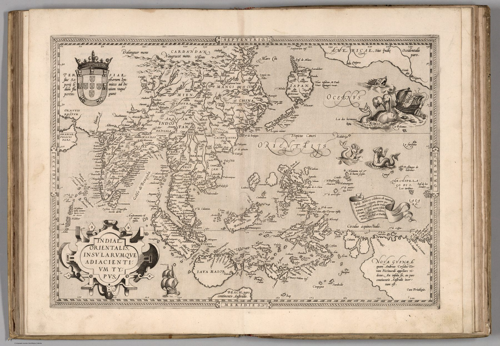

The first modern atlas
Abraham Ortelius issued the Theatrum Orbis Terrarum at Antwerp in 1570, bringing maps by different makers into a uniform format and naming his sources in a scholarly catalogue. This plate, engraved by Frans Hogenberg, was one of the atlas’s defining images of Asia.
A commercial region, not a nation
The map’s subject is wider than India. It extends across China, Japan, Southeast Asia and the archipelago, treating the ‘East Indies’ as a connected field of islands, sea routes and trading regions. India sits at its western entrance. The enlarged and distorted islands of the spice world indicate where European attention was concentrated, not where measurement was most secure.
Compilation and conjecture
Ortelius synthesised existing printed maps and navigational reports rather than surveying the region. Familiar coastlines coexist with uncertain forms and with the speculative southern land labelled Beach. Ships, sea creatures and elaborate cartouches belong to the visual economy of the atlas, but the sheet’s deeper achievement is standardisation: one persuasive image made repeatable across Europe.
The gaze
India is no longer only an isolated coastline. It has become part of a European mental map of the trade world, assembled at Antwerp for readers who may never travel east. The gaze is commercial and encyclopaedic: distant geography gathered, reconciled and sold as a coherent whole.